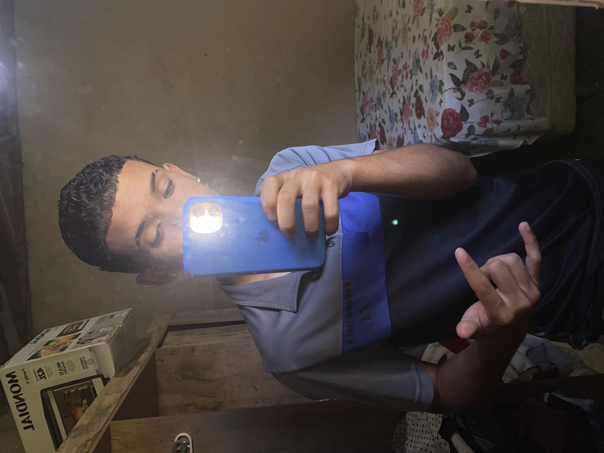

Este Portifolho
Site pessoa feito na aula da professora Michelle do Nacimento HTML , css programaçao web durante o EMTI proficional de informatica
Ver projetos
Meu nome é Kauã, tenho 16 anos e carrego comigo um dos maiores sonhos da minha vida: me tornar um jogador de futebol profissional. Desde pequeno, o futebol faz parte da minha história. É muito mais do que um esporte para mim, é uma paixão, um sentimento e algo que me motiva todos os dias a continuar lutando pelos meus objetivos. Cada vez que entro em campo, sinto uma felicidade enorme e tenho a certeza de que é isso que quero para o meu futuro.
Sei que o caminho para realizar esse sonho não será fácil. Tenho consciência de que existem muitos desafios, dificuldades, momentos de tristeza e obstáculos que podem aparecer durante essa caminhada. Mas também sei que nenhum sonho é grande demais quando existe fé, coragem, dedicação e vontade de vencer. Estou disposto a enfrentar cada dificuldade, aprender com meus erros, superar meus limites e nunca deixar de acreditar no meu potencial.
Tenho muito a aprender e muito a conquistar. Sei que ainda sou jovem e que estou apenas começando minha caminhada, mas tenho dentro de mim uma vontade enorme de crescer, evoluir e mostrar do que sou capaz. Quero melhorar a cada treino, a cada jogo e a cada oportunidade que aparecer. Acredito que o talento é importante, mas a disciplina, o esforço, a humildade e a persistência são fundamentais para quem deseja chegar longe.
Meu maior sonho é conseguir viver do futebol, ter a oportunidade de jogar em grandes clubes, disputar campeonatos importantes, conquistar títulos e construir uma carreira da qual eu possa me orgulhar. Quero entrar em campo diante de milhares de pessoas, vestir uma camisa com orgulho e mostrar que todo o esforço feito durante os anos valeu a pena. Mais do que conquistar fama ou reconhecimento, quero realizar um sonho que nasceu dentro de mim e que cresce cada vez mais.
Também quero dar orgulho à minha família e a todas as pessoas que acreditam em mim, que torcem pelo meu sucesso e que desejam me ver vencer. Quero poder olhar para trás e lembrar de cada dificuldade que enfrentei, de cada treino cansativo, de cada momento em que pensei em desistir, mas escolhi continuar. Quero provar para mim mesmo que fui capaz de transformar um sonho em realidade.
Sei que talvez nem todos acreditem que eu possa chegar lá, mas não preciso convencer ninguém com palavras. Quero mostrar através das minhas atitudes, do meu esforço e da minha dedicação. Não quero que as dificuldades sejam motivos para desistir, mas sim razões para ficar ainda mais forte. Cada dia é uma nova oportunidade de evoluir e dar mais um passo em direção ao meu objetivo.
Aos 16 anos, tenho uma vida inteira pela frente e muitos sonhos para realizar. Talvez eu ainda não tenha chegado onde quero, mas sei onde desejo chegar. Não importa quanto tempo demore, quantas dificuldades apareçam ou quantas vezes eu precise recomeçar: vou continuar lutando pelo meu sonho.
Porque, para mim, o futebol não é apenas jogar uma bola, é ter um propósito, uma motivação e um motivo para nunca desistir. Minha história ainda está sendo escrita, e tenho fé de que um dia vou olhar para trás e dizer: valeu a pena cada esforço, cada lágrima, cada treino e cada sacrifício.
Meu nome é Kauã, tenho 16 anos, sou um garoto cheio de sonhos e com uma vontade imensa de vencer. Ainda não sou um jogador profissional, mas já tenho dentro de mim a determinação de um garoto que não pretende desistir até conseguir. O sonho é grande, a caminhada é longa, mas minha vontade de vencer é maior que qualquer obstáculo.
Um dia quero entrar em campo e perceber que aquele garoto que sonhava em ser jogador conseguiu realizar aquilo que tanto desejava. Quero olhar para o céu, agradecer a Deus e lembrar de onde tudo começou. Até esse dia chegar, vou continuar trabalhando, acreditando e correndo atrás do meu objetivo.
Porque sonhos não se realizam apenas com vontade, mas com fé, coragem, dedicação e persistência. Hoje sou um garoto com um sonho. Amanhã, se Deus quiser, serei a realização de uma história que nunca aceitei desistir de escrever.
eu sei escuta as pessoa e discuto ideias de trabalho com neus colegas
-Saber se expressar bem ajuda em tudo: fazer amigos, estudar, trabalhar e resolver problemas. Quem se comunica bem consegue explicar ideias e ser entendido
É a capacidade de fazer o que precisa ser feito, mesmo sem vontade. A disciplina é o que faz você evoluir de verdade ao longo do tempo.
É saber analisar situações antes de tomar decisões. Ajuda a não cair em erros, enganos ou influências negativas.
Ao aprender a entender suas emoções e pensamentos, você desenvolveu maturidade emocional. Isso ajuda a tomar decisões melhores e crescer como pessoa.
Capacidade de continuar em frente mesmo diante das dificuldades, desafios e momentos difíceis.
Você mostra que não desiste facilmente dos seus objetivos e continua lutando pelos seus sonhos.
Soube se ajustar às mudanças e aos obstáculos da vida, encontrando novas formas de seguir em frente.
Mesmo quando as coisas pareciam impossíveis, você continuou tentando e acreditando que poderia construir um futuro melhor.
Site pessoa feito na aula da professora Michelle do Nacimento HTML , css programaçao web durante o EMTI proficional de informatica
Ver projetosBaixe meu curriculo completo em pdf:
Baixar curriculo(PDF)